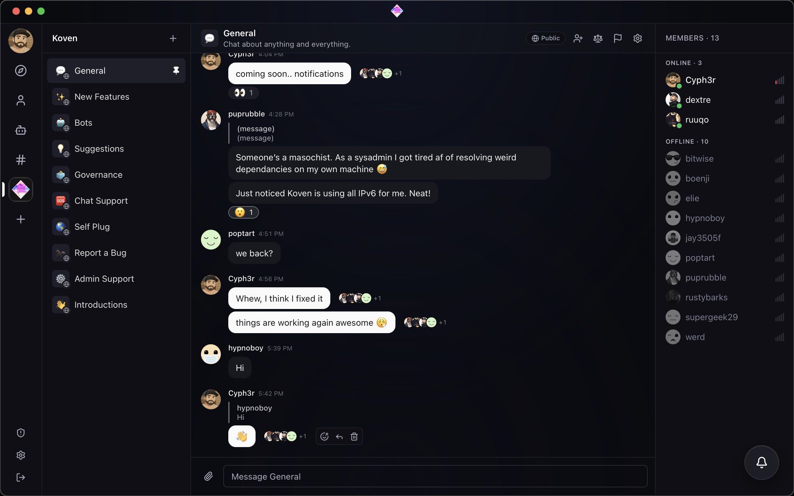

TLDR; mods suck.
We fixed it.
Hiding a message requires a vote from the community. Every flag, every vote, every collapse goes in the public log. Penalties expire. There's no banhammer. The math is in the docs.
Hiding a message requires a vote from the community.
That's the whole rule.
No banhammer. No founder veto. No mod nuking your message because they're having a bad day. The community votes. We just log it.

All the polish of Discord. None of the banhammer.
Voice. Video. Threads. Reactions. Files. Custom emoji. The mod role just doesn't exist.
Three people. One vote.
A message is hidden when three different people flag it AND their combined reputation weight clears the threshold. Both gates have to clear. The math is in the docs.
Everything goes in the log
Every flag, every vote, every collapse, with names attached. If you get silenced here, it happens in public or it doesn't happen.
Penalties expire
Slow-mode, read-only, off-default-feed. All time-bound, all self-expiring. No path from "unpopular post" to "gone forever."
No bans. No shadow-bans.
Bans don't exist on Koven, full stop. Admins keep the server running and pick a logo. That's the whole admin surface.
Reputation from showing up
Weight is earned by posting, getting reactions, sticking around. Not by being friends with the founder. The math is in the docs.
Floor violations skip the vote
CSAM, credible threats, doxxing collapse instantly. False floor flags eat the flagger's reputation. Reviewed in public.
Federated. Koven only.
Other Koven servers federate in automatically. Random homeservers don't get in. Same rules everywhere on the network. No server can silence another.
DMs are E2E encrypted
By default, no toggle to forget. The engine can't read encrypted rooms, so consensus moderation doesn't apply there. The UI says so when it doesn't.
Self-host. One script.
One bin/koven setup brings up the whole stack with auto-renewing TLS. Run your own server. Keep your own data. Federate with the rest.
Voice, video, threads, the works
Everything you'd want from a chat app. Presence, files, custom emoji, threads that actually thread. WebRTC with TURN built in.
MIT. Source on GitHub.
Event types, schemas, reputation math, all documented. Re-implementable from scratch. No lock-in. Read the source.
No telemetry
Koven doesn't phone home. No pixel, no analytics SDK, no Mixpanel. Your server, your logs.
Flag, tally, collapse, decay.
Four steps. No secret mod chats. Every step is a documented event you can grep for.
Anyone flags any message
Pick a category. Add a reason. The flag is public, signed by you, visible to the room. No silent reports.
Engine tallies it up
Distinct flaggers and their combined reputation weight. Both have to cross documented thresholds. The thresholds are in GOVERNANCE.md.
Collapsed, not deleted
Hidden behind a click-to-expand. The original text stays. So does the link to the public flag reasons. Nothing gets nuked.
Penalties expire
Slow-mode, read-only, off-default-feed all wear off on their own. No appeal queue. No perma-bans. No exile.
We're a small community rn. Come say hi.
Sign up at koven.chat. Or stand up your own server in five minutes and federate in.